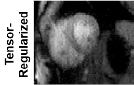

Nikolaos (Nikos) Kargas

Ph.D. Student - Research Assistant
Department of Electrical and Computer Engineering
University of Minnesota
Email: karga005 at umn.edu
Department of Electrical and Computer Engineering
University of Minnesota
Email: karga005 at umn.edu
About me
I am a Ph.D. student in the Department of Electrical and Computer Engineering, at the University of Minnesota advised by Professor Nikolaos D. Sidiropoulos. My research interests are in the areas of Machine learning, Statistics and Optimization.
A major focus of my work is on tensor methods for machine learning. I am interested in developing scalable, efficient and interpretable algorithms for high-dimensional distribution and general nonlinear function learning. Recent research topics include non-parametric density estimation, learning probability models from limited and partially observed data, data completion/regression and spatio-temporal data analysis.
I received the Diploma and MSc degrees from the School of Electronic & Computer Engineering at the Technical University of Crete. As an MSc student, I worked on backscatter networks for large-scale environmental sensing under the supervision of Professor Aggelos Bletsas. As an undergraduate student, I was a member of the RoboCup team Kouretes working on the team's localization module.
News
- 9/2020: I have joined IQVIA as a Machine Learning Researcher for an internship.
- 2/2020: Attended AAAI 2020 and presented our paper "Nonlinear System Identification via Tensor Completion". [Spotlight]
- 11/2019: Our paper "Nonlinear System Identification via Tensor Completion" was accepted at AAAI 2020! [slides]
- 9/2019: Our paper "Crowdsourcing via Pairwise Co-occurrences: Identifiability and Algorithms" was accepted at NeurIPS 2019.
- 7/2019: Our paper "Low-Rank Tensor Models for Improved Multi-Dimensional MRI: Application to Dynamic Cardiac T1 Mapping" was accepted at IEEE Transactions on Computational Imaging.
Research
Supervised Learning via Ensemble Tensor Completion
N. Kargas and N. D. Sidiropoulos
Asilomar Conference on Signals, Systems and Computers (ASILOMAR), 2020
slides
Our recent work has formulated the problem of learning a general nonlinear multivariate function of discrete inputs, as a tensor completion problem with smooth latent factors. In this work, we utilize two ensemble learning techniques to enhance its prediction accuracy.
N. Kargas and N. D. Sidiropoulos
Asilomar Conference on Signals, Systems and Computers (ASILOMAR), 2020
slides
Our recent work has formulated the problem of learning a general nonlinear multivariate function of discrete inputs, as a tensor completion problem with smooth latent factors. In this work, we utilize two ensemble learning techniques to enhance its prediction accuracy.
Nonlinear System Identification via Tensor Completion
N. Kargas and N. D. Sidiropoulos
AAAI Conference on Artificial Intelligence (AAAI), 2020 (Spotlight)
arxiv/code/slides
We show that identifying a general nonlinear function from input-output examples can be formulated as a tensor completion problem and under certain conditions provably correct nonlinear system identification is possible. We extend our method to the multi-output setting and the case of partially observed data.
N. Kargas and N. D. Sidiropoulos
AAAI Conference on Artificial Intelligence (AAAI), 2020 (Spotlight)
arxiv/code/slides
We show that identifying a general nonlinear function from input-output examples can be formulated as a tensor completion problem and under certain conditions provably correct nonlinear system identification is possible. We extend our method to the multi-output setting and the case of partially observed data.
Low-Rank Tensor Models for Improved Multi-Dimensional MRI: Application to Dynamic Cardiac T1 Mapping
B. Yaman, S. Weingartner, N. Kargas, N. D. Sidiropoulos and M. Akcakaya
IEEE Transactions on Computational Imaging, 2019
We explore different tensor decomposition methods in order to enable high-resolution cardiac phase-resolved myocardial T1 mapping.
B. Yaman, S. Weingartner, N. Kargas, N. D. Sidiropoulos and M. Akcakaya
IEEE Transactions on Computational Imaging, 2019
We explore different tensor decomposition methods in order to enable high-resolution cardiac phase-resolved myocardial T1 mapping.
Statistical Learning Using Hierarchical Modeling of Probability Tensors
M. Amiridi, N. Kargas and N. D. Sidiropoulos
IEEE Data Science Workshop (DSW), 2019 (Best student paper award)
slides
We address the complexity of accurately estimating high-dimensional joint distributions by proposing a novel hierarchical learning algorithm for probability mass function (PMF) estimation through parallel local views of a probability tensor.
M. Amiridi, N. Kargas and N. D. Sidiropoulos
IEEE Data Science Workshop (DSW), 2019 (Best student paper award)
slides
We address the complexity of accurately estimating high-dimensional joint distributions by proposing a novel hierarchical learning algorithm for probability mass function (PMF) estimation through parallel local views of a probability tensor.
Crowdsourcing via Pairwise Co-occurrences: Identifiability and Algorithms
S. Ibrahim, X. Fu, N. Kargas and K. Huang
Advances in Neural Information Processing Systems (NeurIPS), 2019
arxiv/code
We propose a framework using pairwise co-occurrences of the annotator responses and show that our approach can identify the Dawid-Skene model under realistic conditions. We develop two algorithms to solve the model identification problem.
S. Ibrahim, X. Fu, N. Kargas and K. Huang
Advances in Neural Information Processing Systems (NeurIPS), 2019
arxiv/code
We propose a framework using pairwise co-occurrences of the annotator responses and show that our approach can identify the Dawid-Skene model under realistic conditions. We develop two algorithms to solve the model identification problem.
Learning Mixtures of Smooth Product Distributions: Identifiability and Algorithm
N. Kargas and N. D. Sidiropoulos
International Conference on Artificial Intelligence and Statistics (AISTATS), 2019
arxiv
We study the problem of learning a mixture model of non-parametric product distributions and propose a two-stage approach which recovers the component distributions of the mixture.
N. Kargas and N. D. Sidiropoulos
International Conference on Artificial Intelligence and Statistics (AISTATS), 2019
arxiv
We study the problem of learning a mixture model of non-parametric product distributions and propose a two-stage approach which recovers the component distributions of the mixture.
Tensors, Learning, and `Kolmogorov Extension' for Finite-alphabet Random Vectors
N. Kargas, N. D. Sidiropoulos and X. Fu
IEEE Transactions on Signal Processing, 2018
arxiv/slides
We prove that high-dimensional PMF recovery from low-dimensional marginalized PMFs can be guaranteed under certain low-rank conditions. We derive identifiability results and an algorithm to carry out the recovery task.
N. Kargas, N. D. Sidiropoulos and X. Fu
IEEE Transactions on Signal Processing, 2018
arxiv/slides
We prove that high-dimensional PMF recovery from low-dimensional marginalized PMFs can be guaranteed under certain low-rank conditions. We derive identifiability results and an algorithm to carry out the recovery task.
Locally Low-Rank tensor regularization for high-resolution quantitative dynamic MRI
B. Yaman, S. Weingartner, N. Kargas, N. D. Sidiropoulos and M. Akcakaya
IEEE 7th International Workshop on Computational Advances in Multi-Sensor Adaptive Processing (CAMSAP), 2017
We propose a locally low-rank tensor regularization approach for high-resolution quantitative dynamic MRI.
B. Yaman, S. Weingartner, N. Kargas, N. D. Sidiropoulos and M. Akcakaya
IEEE 7th International Workshop on Computational Advances in Multi-Sensor Adaptive Processing (CAMSAP), 2017
We propose a locally low-rank tensor regularization approach for high-resolution quantitative dynamic MRI.

Low-Rank Tensor Regularization for Improved Dynamic Quantitative Magnetic Resonance Imaging
N. Kargas, S. Weingartner, N. D. Sidiropoulos and M. Akcakaya
Signal Processing with Adaptive Sparse Structured Representations Workshop (SPARS), 2017
We propose a method based on low-rank tensor regularization for improved undersampled dynamic quantitative MRI reconstruction.
N. Kargas, S. Weingartner, N. D. Sidiropoulos and M. Akcakaya
Signal Processing with Adaptive Sparse Structured Representations Workshop (SPARS), 2017
We propose a method based on low-rank tensor regularization for improved undersampled dynamic quantitative MRI reconstruction.
Completing a Joint PMF from Projections: a Low-rank Coupled Tensor Factorization Approach
N. Kargas and N. D. Sidiropoulos
Information Theory and Applications Workshop (ITA), 2017
arxiv
We show that it is possible to recover higher-dimensional joint PMFs from lower-dimensional marginalized PMFs under certain low-rank conditions and propose a nonnegative coupled low-rank tensor factorization algorithm.
N. Kargas and N. D. Sidiropoulos
Information Theory and Applications Workshop (ITA), 2017
arxiv
We show that it is possible to recover higher-dimensional joint PMFs from lower-dimensional marginalized PMFs under certain low-rank conditions and propose a nonnegative coupled low-rank tensor factorization algorithm.
Past Projects
Fully-Coherent Reader with Commodity SDR for Gen2 FM0 and Computational RFID
N. Kargas, F. Mavromatis and A. Bletsas
IEEE Wireless Communications Letters, 2015
code
This work offers a complete SDR reader with coherent detection, exploitation of FM0 line coding memory in Gen2 tags, careful handling of symbol synchronization and implementation and testing of Gen2 in a commodity SDR, utilizing a single transceiver card.
N. Kargas, F. Mavromatis and A. Bletsas
IEEE Wireless Communications Letters, 2015
code
This work offers a complete SDR reader with coherent detection, exploitation of FM0 line coding memory in Gen2 tags, careful handling of symbol synchronization and implementation and testing of Gen2 in a commodity SDR, utilizing a single transceiver card.
Channel Coding for Increased Range Bistatic Backscatter Radio: Experimental Results
P. N. Alevizos, N. Fasarakis-Hilliard, K. Tountas, N. Agadakos, N. Kargas and A. Bletsas
IEEE RFID Technology and Applications Conference (RFID-TA), 2014
This work offers concrete, low-complexity channel coding for the bistatic scatter radio channel. The theoretical design is experimentally validated with a commodity software-defined radio (SDR) reader.
P. N. Alevizos, N. Fasarakis-Hilliard, K. Tountas, N. Agadakos, N. Kargas and A. Bletsas
IEEE RFID Technology and Applications Conference (RFID-TA), 2014
This work offers concrete, low-complexity channel coding for the bistatic scatter radio channel. The theoretical design is experimentally validated with a commodity software-defined radio (SDR) reader.